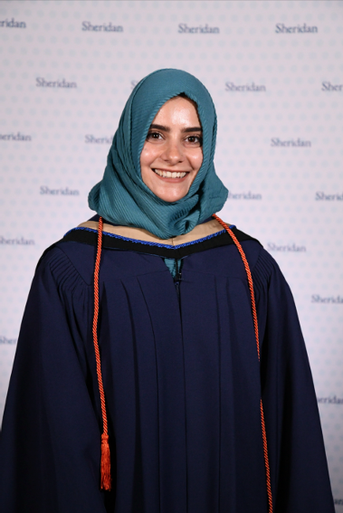

Welcome! I’m
Tazeen Husain.
An Early Childhood and Elementary Educator passionate about play-based and inclusive learning.
With experience in public and Islamic schools, I integrate technology and differentiated instruction to support students’ growth. I am committed to creating learning environments that are engaging, equitable, and responsive to each child’s needs.

Educator • Leader • Lifelong Learner